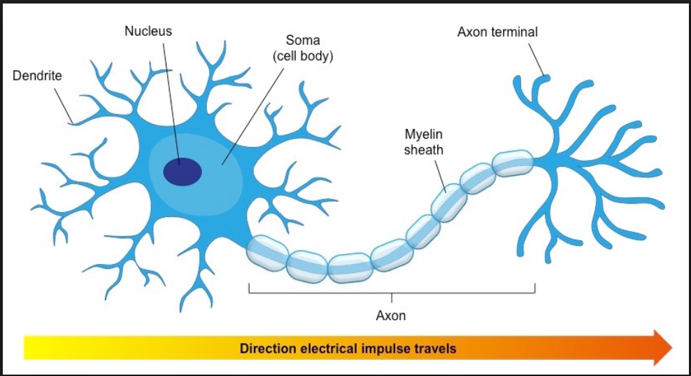

Neuroplasticity And Growth Mindset

Neuroplasticity is the brain’s ability to change and grow throughout a person’s life. Untit recently, scientists thought that this was only possible in early childhood. After that, scientists believed that the brain “solidified” and became fixed in its habits. However, research has shown that the brain continues to change even into old age. Like a physical muscle, the brain gets stronger the more you use it. The brain is a “pattern-seeking device.” When the neurons in your brain are activated in a particular pattern, it’s faster and easier for your brain to follow that same pattern in the future. This means when you use your brain to complete a task, the brain “remembers” the task, so next time it becomes a little easier. The time after that, it’s even easier, and so on. Neuroplasticity is defined as the selective organizing of connections between neurons in our brains. The bottom line is that our brains aren’t static. Through repeated practice and continual challenges, we can build pathways that make our brains stronger and smarter.
Recent advances in neuroscience have shown us that the brain is far more malleable than we ever knew. Research on brain plasticity has shown how connectivity between neurons can change with experience. With practice, neural networks grow new connections, strengthen existing ones, and build insulation that speeds transmission of impulses. These neuroscientific discoveries have shown us that we can increase our neural growth by the actions we take, such as using good strategies, asking questions, practicing, and following good nutrition and sleep habits.
Advance Studies
The Benefits
Neuroplasticity The benefits of being educated in the principals of neuroplasticity are vast. Dr Card Dweck’s = theory compelling and through challenges the belief system’s or fixed mindset by demonstrating how powerful a growth mindset can be in achieving success and happiness. The new psychology of success. “40% People endorse growth mindset” 40% fixed and the rest middle range worship of genius and talent. Neuroplasticity, also known as brain plasticity and neural plasticity is the ability of the brain to change throughout an individual’s life, e.g. brain activity associated with a given function can be transferred to a different location, the proportion of grey matter can change, and synapses may strengthen or weaken over time. What are some of the ways to increase neuroplasticity, food, water, exercise, fed new stimulation information block out everything negative with in your environment and live positive. Neuroplasticity has far-reaching implications and possibilities for almost every aspect of human life and culture from education to medicine. Its limits are not yet known.
Research Neuroplasticity
Research Growth Mindset
Reflect and discuss how these understandings may shape or influence your learning plan and strategy.